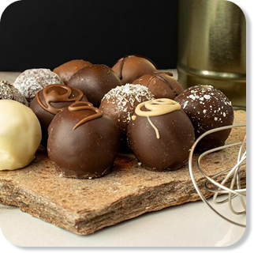
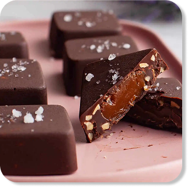
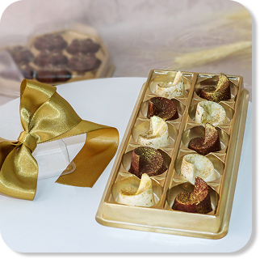

Tudo começou com um desejo simples: transformar o chocolate em uma experiência sensorial inesquecível. O que nasceu em uma pequena cozinha artesanal hoje se tornou um refúgio para os amantes da alta chocolateria. Na Chocolícia, acreditamos que cada bombom é uma pequena obra de arte, moldada à mão com paciência e precisão.

Nossa curadoria de ingredientes é rigorosa. Utilizamos apenas blend de cacaus selecionados, frutas frescas da estação e ingredientes nobres, como o pistache iraniano e a autêntica flor de sal. Cada recheio é desenvolvido para criar um equilíbrio perfeito entre doçura, textura e intensidade, garantindo que cada mordida conte uma história única.

Seja em uma caixa de presente luxuosa ou em um pequeno momento de prazer no meio do dia, nosso objetivo é estar presente nas suas melhores memórias. Criamos chocolates para quem aprecia os detalhes, para quem valoriza o artesanal e para quem sabe que a vida fica muito melhor com uma dose extra de doçura e sofisticação.
